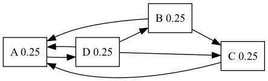

Barak-Nadav Diker
Created: 2023-05-26 Fri 00:11
Table of Contents
- 1. Definition
- 2. Notable quote by google
- 3. Nice to know
- 4. So What’s the formula ?
- 5. Simple Example
- 6. Is there a problem ?
- 7. intuition
- 8. Example
- 9. Another Problem
- 10. Damping Factor
- 11. A more general notation
- 12. Markov Chain
- 13. Serious questions
- 14. First question
- 15. The second question
- 16. Periodic Markov Chain
- 17. Ergodic Theorem
- 18. How fast does the solution converges ?
- 19. The End
- 20. To delete
- 21. To delete
- 22. Some Notable code
- 23. Slide 1
- 24. Nice Code Animation
- 25. some equation
1. Definition
Pagerank is an algorithm used by google search to rank web pages in their search engine
In Simpler words : PageRank is a way of measuring the importance of a website
2. Notable quote by google
PageRank works by counting the number and quality of links to a page to determine a rough estimate of how important the website is. The underlying assumption is that more important websites are likely to receive more links from other websites.
3. Nice to know
PageRank and all associated patent are expired !!
4. So What’s the formula ?
The Naive algorithm is the following formula
\[ PR(u) = \sum_{v \in B_u}\frac{PR(v)}{L(v)} \]
Where \( L \colon V \to \mathbb{N} \) is number of outbounds links and \(PR \colon V \to [0,1] \) is the PageRank of a vertex and the initial probability is \( \forall v \in V , PR(v)=\frac{1}{|V|} \)
5. Simple Example
Note the following graph
PR(A) = 0.25
PR(B) = 0.25
PR(C) = 0.25
PR(D) = 0.25

5.1. After first iteration
We’ll Calculate explicitly for PR(A)
\[ PR(A)= \frac{PR(B)}{L(B)} + \frac{PR(C)}{L(C)} + \frac{PR(D)}{L(D)} \] \[ PR(A)= \frac{0.25}{2} + \frac{0.25}{1} + \frac{0.25}{3}\]
6. Is there a problem ?
- If a page has no links to other pages, it becomes a sink and therefore terminates the random surfing process!
Sound vague .. Why is it a problem ?
7. intuition
In Each iteration every note “passes” all his probability to it’s outbound neighbours
but if one of the notes doesn’t have outbound edges he’ll receive probability but the note won’t export his probablity
So the sum of the probability of all nodes \( \sum_{v \in V}PR(v) = 1-PR(v_i) < 1 \) where \( v_i \) is the probability of sink in the previous iteration
8. Example
Example with sink

8.1. in the first iteration
Note that node B and node C passes all it’s probability to node A And node A passes 0.333 to nobody !

9. Another Problem
Another Problem might occur if we have inside our graph infinite cycle
like in the following graph
All the PageRank would go into node a and node b
10. Damping Factor
solution : if we’ll reach a sink we’ll jump to a random note (Uniformly) by the formula \[ PR(p_{i})= \frac{1-d}{N} + d \sum_{p_{j} \in B_{p_i}} \frac{PR(p_j)}{L(p_j)} \] Where d is usually 0.85 i.e \( d=0.85 \) and \( B_{p_i} \) is the set containing all pages linking to page u and \( L(p_j) \) is the number of links from \( p_j \)
Why will it work ?? how ??
11. A more general notation
note that we can write the formula more compactly like so
where ’’’R’’’ is the solution of the equation
11.1. The full equation
11.2. Continue
where the adjacency function \( \ell( p_i , p_j ) \) is the ratio between number of links outbound from page j to page i to the total number of outbound links of page j.
11.3. The Algorithm
If the matrix \( {\mathcal {M}} \) is a transition probability, i.e., column-stochastic and \( \mathbf{R} \) is a probability distribution
- \(\|\mathbf{R}\|=1, \mathbf{E}\mathbf{R}=\mathbf{1} \) where \( \mathbf{E} \) is matrix of all ones
\[ \mathbf{R} = \left( d \mathcal{M} + \frac{1-d}{N} \mathbf{E} \right)\mathbf{R} =: \widehat{ \mathcal{M}} \mathbf{R} \]
11.4. Continue
Hence PageRank \( \mathbf{R} \) is the principal eigenvector of \( \widehat{\mathcal{M}} \). A fast and easy way to compute this is using the power method: starting with an arbitrary vector x(0), the operator \( \widehat{\mathcal{M}} \) is applied in succession, i.e.,
\[ x(t+1) = \widehat{\mathcal{M}} x(t), \]
until
\[ |x(t+1) - x(t)| < \epsilon \]
11.5. Simple Implementation
import numpy as np
def pagerank(M, num_iterations: int = 100, d: float = 0.85):
N = M.shape[1]
v = np.ones(N) / N
M_hat = (d * M + (1 - d) / N)
for i in range(num_iterations):
v = M_hat @ v
return v
M = np.array([[0 , 0, 0 , 0, 1],
[0.5, 0, 0 , 0, 0],
[0.5, 0, 0 , 0, 0],
[0 , 1,0.5, 0, 0],
[0 , 0,0.5, 1, 0]])
v = pagerank(M, 100, 0.85)
print(v)
12. Markov Chain
Let’s be more formal ! Given a Graph and initial probability vector \( \pi _0 \in \mathbb{R}^n \) where n is the number of vertaces , Define the Matrix P to be \( [P]_{ij} \) the probability of going from node i to node j Define \( \forall j \in [0,n]\bigcap \mathbb{N} , \vec \pi _{n+1} (j) = \vec \pi _n \cdot \vec P_{i,j} \)
12.1. More definition
we want to find a unique stationary distribution \( \lim\limits_{n\to \infty} \pi _n = \pi \) and Rank the Web Pages via that unique stationary distribution !
12.2. Example
Observe the following graph \[ \pi _{n+1}(0) = \pi _n \cdot P(0,0) + \pi _n \cdot P(1,0) +\pi _n \cdot P(2,0) \\ +\pi _n \cdot P(3,0) + \pi _n \cdot P(4,0) \]
13. Serious questions
- Is there unique stationary distribution ? Certainly it would be hard to evaluate web pages if there are couple of stationary distribution
- Does every initial distribution converges to the stationary one ? if so how to pick initial distribution ?
serious question … maybe mathematics could help us ??
14. First question
Can you define a Markov chain with multiple stationary distributions ?
Think of markov chain with only 2 states …
14.1. The Answer
This graph has multiple stationary solutions
14.2. Another Example
Can we Think of another example ??
Graph that isn’t strongly connect .i.e exists 2 nodes such that we cannot create a path from the former to the latter
interestingly , That is one of the definition of “Reducible Markov Chain”
Let’s see the example !
14.3. Visulaize
There isn’t a path between node 0 into node 1 i.e this graph isn’t reducible So again the stationary solution isn’t unique !!
14.4. Conclusion
The first graph was periodic markov chain and the second graph was reducible markov chain
apparently The answer is yes to the 2 previous question if the graph is aperiodic and irreducible markov chain
14.5. Theorem
if graph is Irreducible markov chain i.e all state are reachable \( \rightarrow \) there is unique stationary distribution
Note , The first example has a unique stationary distribution (0.5 0.5) All other solutions aren’t stationary for example (0.3 0.7) would oscilate between them
15. The second question
Does every initial distribution converge to the stationary one ?
Clarification ! for all initial distribution we want to converge to the stationary one
Give me an irreducible markov chain where the stationary distribution does not converge
we have already counter-example , so what else we need to assume on the graph ?
16. Periodic Markov Chain
- Must be an irreducible markov chain
- User visits states in regular interval (period) > 1 (There is a better definition)
So Given an Periodic Markov Chain There is no guarantee of convergence to stationary distribution
If no such period exists > 1 , then we said that the graph is Aperiodic Markov Chain
17. Ergodic Theorem
For Irreducible and aperiodic markov chains:
- A unique stationary distribution \( \pi \) exists
- All initial distribution \( \pi _0 \) converges to that unique stationary distribution \( \pi \)
18. How fast does the solution converges ?
Because of the large eigengap of the modified adjacency matrix above, the values of the PageRank eigenvector can be approximated to within a high degree of accuracy within only a “few” iterations.
But What is “few” ?
log(n)
19. The End
End !
20. To delete
Column 1
Column 2
21. To delete
Box 1
Box 2
Box 3
22. Some Notable code
int main()
{
cout << "Hello" << endl;
}
23. Slide 1
- List item 1
- List item 2
24. Nice Code Animation
let index = 1
24.1. Added value
let index = 1
let value = 2
25. some equation
\[ \sin(x) = \frac{1}{n} \]